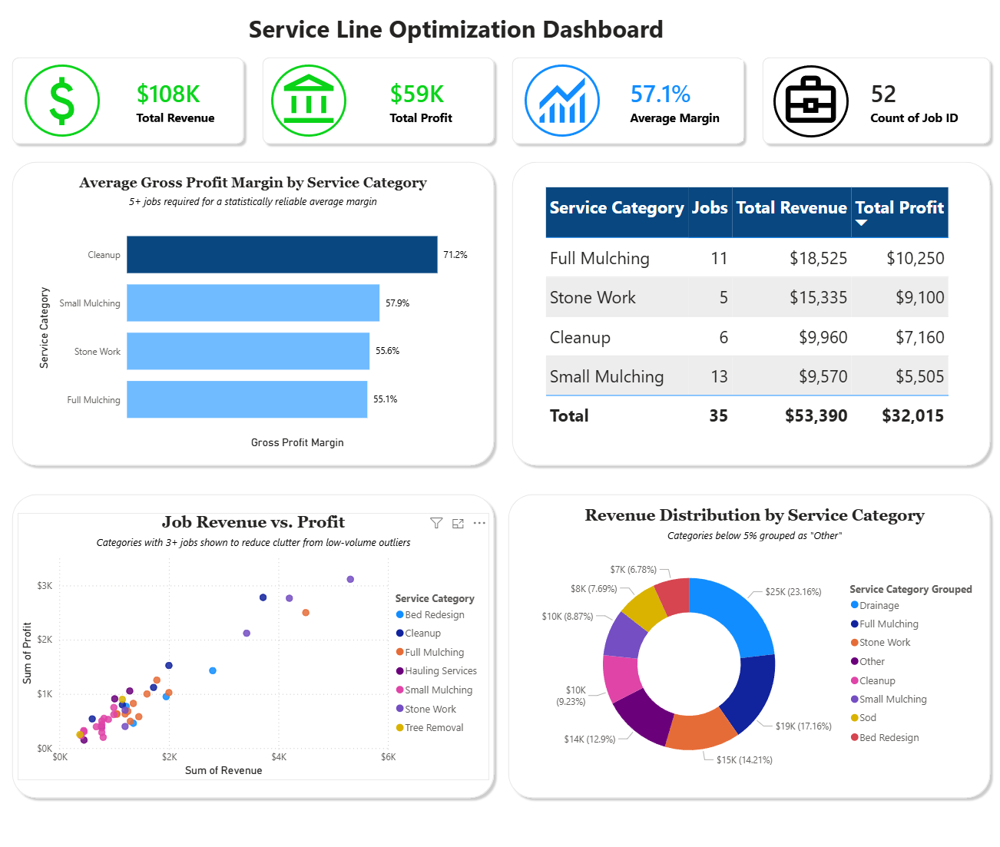
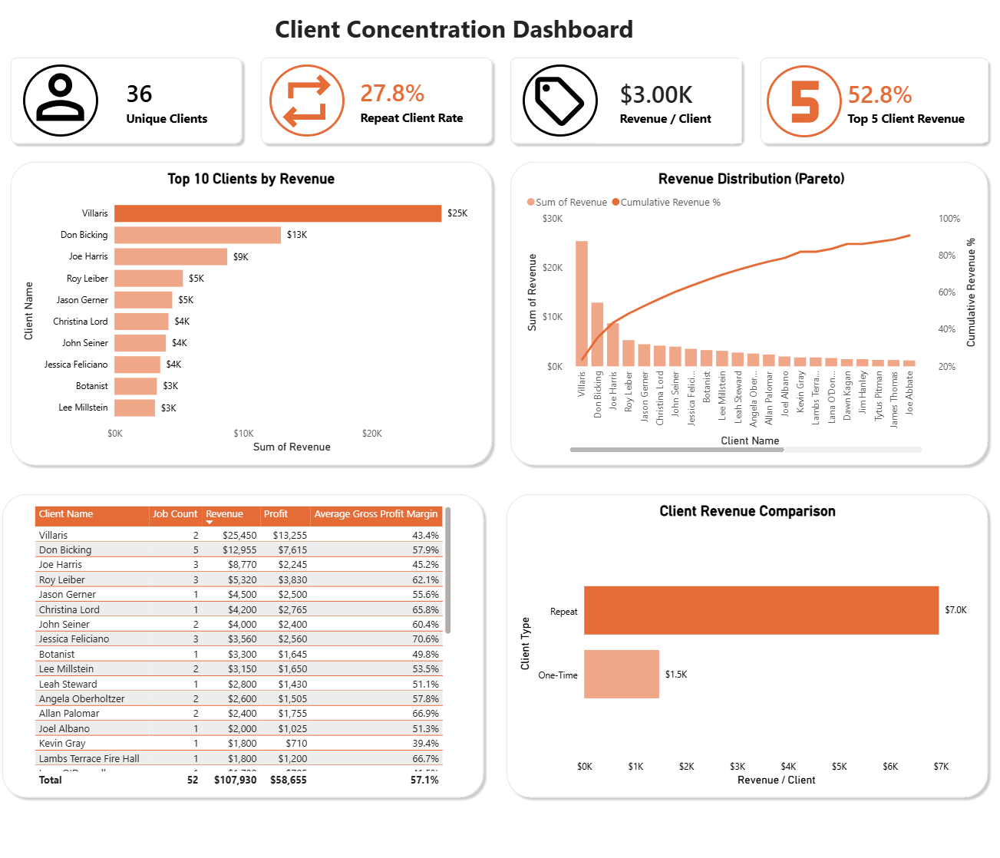

Greenscapes — End-to-End Power BI Project
Viewing these dashboards. These were built in Power BI Desktop. A live interactive embed isn't available here because my Microsoft account is a school tenant with “Publish to web” disabled by the admin. Instead, each dashboard is shown as a full screenshot below, and you can download the original .pbix file to open and interact with it in Power BI Desktop (free, Windows).
Overview
I built this end-to-end business intelligence project by importing operational data from PostgreSQL into Power BI, creating DAX measures, and designing interactive dashboards that translate business data into insights. This portfolio project focuses on identifying the key drivers of revenue, profitability, and labor efficiency across the business.
Dashboard 1 — Service-Line Optimization
Compares profitability across service lines to identify which offerings drive margin versus volume.

Takeaways: Continue using mulching services to maintain a consistent influx of work, but allocate additional marketing towards higher-margin services such as Stone Work and Hauling Services to maximize profit.
Dashboard 2 — Crew Productivity
Examines whether crew size and supervision affect job profitability and labor efficiency.

Takeaways: Increasing crew size does not consistently improve financial performance. Smaller crews delivered stronger profit per labor hour and gross margins, which indicates optimizing crew allocation could improve productivity without increasing labor hours.
Dashboard 3 — Client Concentration
Analyzes how Greenscapes' revenue is distributed across clients to identify risks of dependency.

Takeaways: Top 5 clients drive 52.8% of total revenue, with one client (Villaris) alone accounting for about 24%. Repeat clients generate significantly more revenue ($7K vs $1.5K) than one-time clients, pointing to customer loyalty as a strong driver of revenue.